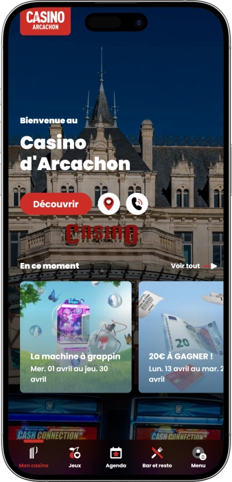
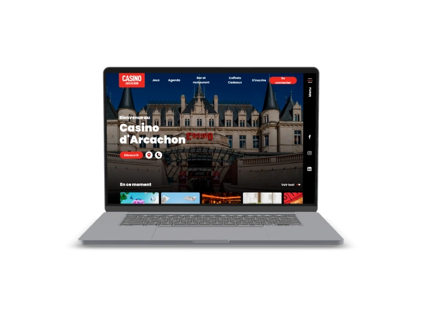

Offre de bienvenue exclusive de
Offre de bienvenue exclusive de
Le Casino Incontournable du Bassin d'Arcachon
Top casinos
Détails du bonus
Casino
Bonus
Note
Tours gratuits
Plus d'infos
Obtenir
Avantages
- À la recherche d'une soirée inoubliable en Gironde ? Notre casino, niché dans le Château Deganne à Arcachon, vous accueille 7j/7 dans un cadre historique exceptionnel agréé par les autorités françaises de régulation des jeux. Voici ce qui fait de nous le premier choix des joueurs du Bassin d'Arcachon :
-
75 machines à sous certifiées, disponibles dès 11h chaque jour
-
Jeux de table : Blackjack, Boule 2000, Roulette anglaise électronique
-
Restaurant O'Deganne : cuisine raffinée avec vue sur le Bassin d'Arcachon
-
Programme de fidélité Players Plus — 5 € offerts dès l'adhésion
-
Groupe Partouche agréé, opérateur officiel de 41 casinos en France depuis 1973
-
Concerts et animations gratuits chaque samedi soir au Château Deganne
- Rejoignez des milliers de joueurs qui font confiance à notre casino agréé à Arcachon. Notre équipe vous accueille 7j/7 pour une soirée d'exception au cœur de la Gironde.
Partouche Arcachon App



Notre Histoire à Arcachon
Niché dans le majestueux Château Deganne, notre casino est un lieu emblématique du Bassin d'Arcachon depuis des décennies. Membre du Groupe Partouche, nous offrons jeux certifiés, animations et gastronomie dans un cadre historique unique en Gironde.
- Intégration au Groupe Partouche, leader français des casinos
- Installation dans le Château Deganne, monument historique d'Arcachon
- Lancement du restaurant gastronomique O'Deganne
- Introduction de la Roulette anglaise électronique et Players Plus
Notre casino est agréé et opère sous la réglementation française des jeux. Nos machines à sous et jeux de table sont certifiés par les autorités compétentes, garantissant équité et transparence totales pour chaque joueur à Arcachon.

Nous enrichissons constamment nos jeux et animations pour les joueurs d'Arcachon. Le jeu responsable reste notre priorité absolue. Venez découvrir pourquoi nous sommes l'incontournable du Bassin d'Arcachon !
Nos Jeux au Cœur du Bassin d'Arcachon
L'Univers des Jeux du Casino Partouche Arcachon
Bienvenue dans notre salle de jeux d'exception, nichée au cœur du majestueux Château Deganne à Arcachon, en Gironde. Notre établissement de divertissement, agréé par les autorités françaises de régulation, vous propose une expérience de jeu complète et inoubliable. Que vous soyez passionné de machines à sous, adepte des jeux de table ou amateur de roulette électronique, notre casino réunit tout ce qu'il faut pour une soirée réussie au bord du Bassin d'Arcachon. Nous accueillons nos joueurs 7 jours sur 7, avec une ouverture des machines à sous dès 11h et des jeux traditionnels chaque soir à partir de 20h30, permettant à chacun de profiter de son moment préféré, à l'heure qui lui convient le mieux.
Nos Machines à Sous : Sensations Garanties
Notre salle de jeux propose 75 machines à sous soigneusement sélectionnées pour offrir une variété incomparable à tous nos visiteurs. Des rouleaux mécaniques aux machines vidéo modernes, en passant par des postes de vidéo poker, chaque joueur trouve facilement son bonheur. Les mises s'adaptent à tous les budgets, de quelques centimes à plusieurs euros par partie, vous permettant de maîtriser parfaitement votre expérience de jeu à Arcachon. Nos machines sont ouvertes dès 11h chaque jour, idéales pour une pause divertissante pendant votre séjour en Gironde ou une soirée complète de plaisir sur le front de mer d'Arcachon.
- Rouleaux mécaniques : Les classiques intemporels qui font battre le cœur des amateurs de sensations. Mises accessibles dès 0,01 € pour une expérience de jeu adaptée à tous les budgets des joueurs du Bassin d'Arcachon.
- Rouleaux vidéo : Les machines nouvelle génération avec graphismes immersifs, multiples lignes de paiement et bonus intégrés. Profitez de thèmes variés et de fonctionnalités exclusives disponibles dans notre salle de jeux d'Arcachon.
- Vidéo Poker : Pour les joueurs qui aiment combiner stratégie et chance, nos postes de vidéo poker offrent une expérience unique avec des taux de retour parmi les meilleurs du marché, certifiés conformes par les autorités françaises.
- Disponibilité 7j/7 : Nos machines à sous ouvrent chaque jour dès 11h et fonctionnent jusqu'à 1h du matin (3h les vendredis et samedis), pour vous offrir un maximum de flexibilité lors de votre séjour en Nouvelle-Aquitaine.
Jeux de Table Traditionnels : L'Art du Jeu à la Française
Chaque soir à partir de 20h30 — et dès 16h30 le dimanche — notre salle de jeux s'anime avec l'ouverture de nos jeux de table traditionnels. Cette ambiance festive et conviviale est la marque de fabrique de notre casino du Château Deganne. Nos tables de Blackjack accueillent aussi bien les débutants curieux que les joueurs expérimentés, avec des croupiers professionnels formés aux standards du Groupe Partouche. La Boule 2000, jeu typiquement français, est l'une de nos attractions phares : simple à apprendre, captivante à maîtriser, elle rassemble chaque soir des joueurs de tous horizons dans notre établissement d'Arcachon.
- Blackjack : Le classique absolu des jeux de table, accessible dès 20h30 chaque soir. Nos tables accueillent joueurs novices et confirmés dans une ambiance chaleureuse, avec des croupiers professionnels du Groupe Partouche garantissant une partie équitable et certifiée.
- Boule 2000 : Jeu emblématique de la tradition française des casinos, la Boule 2000 est l'une des attractions incontournables de notre salle de jeux à Arcachon. Simple dans ses règles, elle offre des soirées palpitantes dans un cadre historique unique.
- Horaires adaptés : Les jeux de table ouvrent du lundi au samedi à 20h30, et le dimanche dès 16h30 pour les joueurs qui souhaitent profiter d'une après-midi de divertissement dans notre casino de Gironde.
Roulette Anglaise Électronique : Innovation au Château Deganne
Notre casino d'Arcachon propose 12 postes de Roulette anglaise électronique, disponibles tous les jours et à toute heure dès l'ouverture de l'établissement. Cette innovation technologique permet à nos joueurs de profiter du frisson de la roulette sans attendre l'ouverture des tables traditionnelles. Avec une interface intuitive et des graphismes de haute qualité, nos postes électroniques offrent la même expérience authentique que la roulette classique, tout en garantissant des résultats générés de façon aléatoire et certifiée par les autorités régulatrices françaises. C'est l'option idéale pour les visiteurs en séjour à Arcachon qui souhaitent profiter d'une courte session de jeu à n'importe quel moment de la journée.
| Jeu | Horaires | Disponibilité |
|---|---|---|
| Machines à sous | Dès 11h | 7j/7 |
| Roulette électronique | Dès 11h | 7j/7 |
| Blackjack | Dès 20h30 | 7j/7 |
| Boule 2000 | Dès 20h30 | 7j/7 |
| Jeux du dimanche | Dès 16h30 | Dimanche |
Le Jeu Responsable : Notre Engagement à Arcachon
Chez nous, le plaisir du jeu va de pair avec la responsabilité. Notre établissement du Château Deganne à Arcachon applique rigoureusement les dispositifs de jeu responsable imposés par la réglementation française. Nous mettons à la disposition de nos joueurs des outils d'auto-exclusion, des limites de temps et des ressources d'information sur les comportements de jeu. Notre personnel, formé aux standards du Groupe Partouche, est en mesure d'accompagner tout joueur qui en aurait besoin. Le jeu doit rester un loisir joyeux : c'est pourquoi nous veillons à ce que chaque visite dans notre casino de Gironde soit une expérience positive et maîtrisée. Pour toute information, n'hésitez pas à vous rendre à l'accueil du casino ou à contacter notre équipe, disponible 7j/7 à Arcachon.
Pourquoi Choisir Notre Casino à Arcachon ?
Notre établissement se distingue de tous les autres lieux de divertissement de la région par la combinaison unique d'un cadre historique exceptionnel — le Château Deganne, monument emblématique d'Arcachon — et d'une offre de jeux certifiée et moderne. Appartenant au Groupe Partouche, opérateur officiel de 41 casinos en France depuis plus de 50 ans, nous bénéficions d'un savoir-faire reconnu dans l'industrie du gaming. Nos joueurs du Bassin d'Arcachon et de toute la Gironde apprécient la diversité de notre offre, allant des machines à sous aux jeux de table traditionnels en passant par la roulette électronique. Que vous soyez résident local ou touriste de passage en Nouvelle-Aquitaine, notre casino est l'adresse incontournable pour passer une soirée mémorable. Rejoignez-nous dès aujourd'hui et profitez d'une expérience de jeu d'exception au cœur d'Arcachon !
Fournisseurs de logiciels
Services & Expériences au Casino d'Arcachon
Une Expérience Complète au Château Deganne d'Arcachon
Notre casino d'Arcachon ne se limite pas aux jeux : nous vous proposons une expérience de divertissement globale, alliant gastronomie, animations musicales, programme de fidélité exclusif et services événementiels dans le cadre somptueux du Château Deganne, en plein cœur du Bassin d'Arcachon. En choisissant de passer votre soirée chez nous, vous accédez à un univers où chaque détail a été pensé pour votre plaisir, du restaurant gastronomique O'Deganne jusqu'aux animations live qui rythment nos week-ends en Gironde. Le tout sous l'égide du Groupe Partouche, gage de qualité et de sérieux depuis plus de 50 ans dans l'industrie française des casinos.
Restaurant O'Deganne : Gastronomie et Vue sur le Bassin
Notre restaurant O'Deganne est l'un des fleurons du Casino Partouche d'Arcachon. Installé dans les élégantes salles du Château Deganne, il propose une cuisine raffinée élaborée par notre chef, dans un cadre d'exception avec vue sur le Bassin d'Arcachon. Que vous souhaitiez dîner avant une soirée de jeux ou simplement profiter d'un repas gastronomique en Gironde, le restaurant O'Deganne s'impose comme une adresse incontournable de la gastronomie locale. Nos plats utilisent des produits frais et régionaux de Nouvelle-Aquitaine, vous garantissant une expérience culinaire authentique et mémorable à chaque visite.
- Cuisine raffinée : Notre chef élabore des menus inspirés des produits régionaux de Gironde et de Nouvelle-Aquitaine, avec une carte renouvelée régulièrement pour offrir à chaque visite une nouvelle découverte culinaire au cœur du Château Deganne d'Arcachon.
- Cadre historique : Dîner au restaurant O'Deganne, c'est s'installer dans l'une des plus belles salles du Château Deganne, monument emblématique du front de mer d'Arcachon. Un décor chargé d'histoire qui sublime chaque repas.
- Bar des jeux & Espace Lounge : Pour une pause plus légère, notre espace lounge et bar des jeux vous accueille pour des cocktails élaborés, des boissons rafraîchissantes et des plats préparés par notre chef, dans une atmosphère détendue et conviviale.
- Coffrets cadeaux : Offrez à vos proches une expérience unique au Casino d'Arcachon grâce à nos coffrets et chèques cadeaux, incluant crédits de jeu, coupes de champagne et dîner gastronomique. Une idée cadeau originale pour les amateurs de divertissement en Gironde.
Animations & Concerts : Arcachon S'Embrase Chaque Samedi
Chez nous, l'ambiance ne s'arrête jamais ! Notre casino du Château Deganne organise des concerts gratuits chaque samedi soir, faisant vibrer les murs historiques de cet établissement emblématique d'Arcachon. Artistes locaux, groupes de jazz, soirées thématiques : notre programme d'animations est renouvelé régulièrement pour offrir à nos visiteurs du Bassin d'Arcachon des soirées toujours différentes et mémorables. Ces événements sont accessibles à tous nos joueurs, créant une atmosphère festive et conviviale qui distingue notre casino de tout autre établissement de Gironde. Consultez régulièrement notre programme pour ne manquer aucune soirée exceptionnelle à Arcachon.
Programme de Fidélité Players Plus
En tant que joueur régulier du Casino Partouche d'Arcachon, profitez pleinement de notre programme de fidélité exclusif Players Plus. Dès votre adhésion, vous bénéficiez de 5 € offerts en crédits de jeu, d'offres promotionnelles personnalisées et d'invitations à des événements exclusifs dans notre établissement de Gironde. Le programme Players Plus récompense votre fidélité avec des avantages croissants : plus vous jouez dans notre casino du Bassin d'Arcachon, plus vous accumulez de points convertibles en crédits, entrées gratuites et réductions au restaurant O'Deganne. Ce programme, disponible dans l'ensemble des 41 casinos du Groupe Partouche, vous permet également de profiter de vos avantages lors de vos visites dans d'autres établissements de la chaîne à travers toute la France.
- 5 € offerts à l'adhésion : Rejoignez Players Plus et recevez immédiatement 5 € en crédits de jeu pour commencer votre aventure au Casino Partouche d'Arcachon. Une offre de bienvenue réservée aux nouveaux membres du programme de fidélité.
- Offres SMS exclusives : En acceptant nos communications, bénéficiez d'offres spéciales personnalisées, d'invitations à des soirées privées et d'événements VIP dans notre casino de Gironde. Des avantages réservés à nos membres fidèles.
- Réseau Partouche : Votre carte Players Plus est valable dans les 41 casinos du Groupe Partouche à travers la France et au-delà, vous permettant de profiter de vos avantages fidélité où que vous soyez en déplacement.
Espace de Réception : Événements au Château Deganne
Le Casino Partouche d'Arcachon met à votre disposition un espace de réception unique pour vos événements personnels ou professionnels. Mariages avec vue sur le Bassin d'Arcachon, séminaires d'entreprise, réceptions familiales ou soirées de gala : notre salle du Château Deganne, monument historique de Gironde, offre un cadre exceptionnel et inoubliable. Notre équipe événementielle accompagne chaque organisateur dans la personnalisation de son événement, depuis la disposition des tables jusqu'au menu gastronomique élaboré par notre chef. Contactez-nous pour obtenir un devis personnalisé et organiser votre prochain événement dans l'un des lieux les plus emblématiques d'Arcachon.
| Service | Détails | Accès |
|---|---|---|
| Restaurant O'Deganne | Cuisine gastron | 7j/7 |
| Bar Lounge | Cocktails & snacks | 7j/7 |
| Concerts live | Gratuit | Chaque samedi |
| Players Plus | 5 € offerts | Sur adhésion |
| Espace réception | Événements privés | Sur réservation |
| Coffrets cadeaux | Dès 50 € / 2 pers. | Sur commande |
Comment Nous Rejoindre à Arcachon ?
Vous souhaitez vivre une soirée inoubliable au Casino Partouche Arcachon ? Rien de plus simple ! Notre établissement est idéalement situé au Château Deganne, Boulevard de la Plage à Arcachon, à deux pas du front de mer. En voiture, rejoignez-nous via l'autoroute A63 puis la N250 ; en train, la gare SNCF d'Arcachon n'est qu'à 5 minutes à pied ; en avion, l'aéroport de Bordeaux se trouve à seulement 45 minutes en voiture. Notre parking est accessible à tous nos visiteurs. Préparez vos pièces d'identité valides, car l'accès à nos salles de jeux est réservé aux personnes majeures, conformément à la réglementation française sur les jeux. Nous vous attendons 7j/7 pour une expérience unique en Gironde !
FAQ
Notre casino propose 75 machines à sous, des tables de Blackjack, la Boule 2000 et 12 postes de Roulette anglaise électronique. Les machines à sous ouvrent dès 11h, les jeux de table à partir de 20h30 (16h30 le dimanche). Tous nos jeux sont certifiés conformes par les autorités françaises de régulation.
Notre casino est ouvert 7 jours sur 7. Les machines à sous sont accessibles dès 11h et ferment à 1h du matin (3h les vendredis et samedis). Les jeux de table traditionnels ouvrent chaque soir à 20h30, et dès 16h30 le dimanche pour profiter d'une après-midi de jeux en Gironde.
Adhérez gratuitement à Players Plus et recevez 5 € en crédits de jeu offerts. À chaque visite au Casino Partouche d'Arcachon, cumulez des points convertibles en avantages : crédits jeux, réductions au restaurant O'Deganne et invitations à des soirées exclusives. Votre carte est valable dans les 41 casinos du Groupe Partouche en France.
Oui, notre restaurant gastronomique O'Deganne est installé dans le Château Deganne, avec une vue imprenable sur le Bassin d'Arcachon. Notre chef y propose une cuisine raffinée à base de produits régionaux de Gironde. Le bar lounge vous accueille également pour des cocktails et des plats légers tout au long de la soirée.
Oui ! Notre casino du Château Deganne organise des concerts gratuits chaque samedi soir, ouverts à tous nos visiteurs. Nous proposons également des soirées thématiques et des animations régulières tout au long de l'année à Arcachon. Consultez notre programme sur le site pour ne manquer aucun événement.
Contactez directement notre équipe événementielle pour organiser votre mariage, séminaire ou réception privée dans notre salle du Château Deganne à Arcachon. Nous vous proposons un accompagnement personnalisé, un menu gastronomique sur mesure et un cadre historique unique en Gironde avec vue sur le Bassin d'Arcachon.
Absolument. Notre établissement est agréé et opère sous la réglementation stricte des jeux en France. Membre du Groupe Partouche, opérateur officiel de 41 casinos depuis plus de 50 ans, nous appliquons des protocoles rigoureux de sécurité et de jeu responsable. Tous nos jeux sont certifiés conformes par les autorités compétentes françaises.
Notre casino est situé au Château Deganne, Boulevard de la Plage à Arcachon. Accessible en voiture via l'A63 puis la N250, en train (gare SNCF à 5 min à pied) ou en avion depuis Bordeaux-Mérignac à 45 min. L'accès est réservé aux personnes majeures, muni d'une pièce d'identité valide.